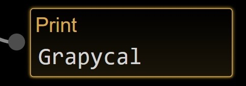
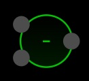

Built-in Nodes#
Here is a list of all the built-in nodes in Grapycal. These basic nodes are always handy to use no matter what task you are working on.
Interaction#
Print#
{kind=link}
Display the data received from the input edge.
- Inputs:
data: data to be displayed
Eval#
{kind=link}
Equivalent to Python’s eval function. It evaluates the expression in the input text box and send out the result.
To make it run, either send in a signal to the run input port, or double click on the node.
- Inputs:
run: send in a signal to evaluate the expression
- Outputs:
result: the result of the expression
Exec#
{kind=link}
Equivalent to Python’s exec function. It executes the statements in the input text box.
To make it run, either send in a signal to the run input port, or double click on the node.
- Inputs:
run: send in a signal to run the statements
- Outputs:
done: send out a signal when the statements are done
ImagePaste#
![[ImagePaste image]](user_manual/node_imgs/imagepaste.jpg)
ImageDisplay#
![[ImageDisplay image]](user_manual/node_imgs/imagedisplay.jpg)
LinePlot#
![[LinePlot image]](user_manual/node_imgs/lineplot.jpg)
Label#
![[Label image]](user_manual/node_imgs/label.jpg)
Webcam#
![[Webcam image]](user_manual/node_imgs/webcam.jpg)
None#
![[None image]](user_manual/node_imgs/none.jpg)
Function/math#
Addition#
{kind=link}
Adds a set of values together. The values can be of any addable type, such as numbers, NumPy arrays, PyTorch tensors, or strings.
- Inputs:
values: a set of values
- Outputs:
sum: sum of all values
Subtraction#
{kind=link}
Calculates sum(B) - sum(A).
- Inputs:
A: A set of values, A
B: A set of values, B
- Outputs:
Difference: sum(A) - sum(B)
Multiplication#
{kind=link}
Multiplies a set of values together. The values can be of any multipliable type, such as numbers, NumPy arrays, or PyTorch tensors.
- Inputs:
values: a set of values
- Outputs:
product: product of all values
Division#
{kind=link}
Calculates product(B) / product(A).
- Inputs:
A: A set of values, A
B: A set of values, B
- Outputs:
Quotient: product(B) / product(A)
Procedural#
For#
![[For image]](user_manual/node_imgs/for.jpg)
Iterate through an iterable object. Each iteration will push the next item to the item port.
Double click to interrupt the iteration.
Procedure#
![[Procedure image]](user_manual/node_imgs/procedure.jpg)
Limiter#
![[Limiter image]](user_manual/node_imgs/limiter.jpg)
InPortal#
![[InPortal image]](user_manual/node_imgs/inportal.jpg)
OutPortal#
![[OutPortal image]](user_manual/node_imgs/outportal.jpg)
Function#
Lambda#
{kind=link}
LambdaNode is one of the most flexible nodes in Grapycal. It allows you to define any function, which is similar to Python’s lambda function.
It can be freely configured to be any function of any number of inputs and outputs. For each output, the node provides an input box for you to define the function with an expression.
- Inputs:
You can add any number of inputs to the node.
- Outputs:
You can add any number of outputs to the node.
FuncCall#
![[FuncCall image]](user_manual/node_imgs/funccall.jpg)
A FuncCallNode represents a call to a specific function. Once you assign a function name to the FuncCallNode, Grapycal will search for a FuncInNode and a FuncOutNode existing in the workspace with the same function name. Then, its ports will be updated accroding to the function definition.
FuncIn#
![[FuncIn image]](user_manual/node_imgs/funcin.jpg)
FuncOut#
![[FuncOut image]](user_manual/node_imgs/funcout.jpg)
Data#
Variable#
{kind=link}
VariableNode stores a variable in the workspace. It can be used to store data for later use.
- Inputs:
run: send in a signal to actively output the variable’s value
set: set the variable’s value
- Outputs:
get: get the variable’s value
Split#
{kind=link}
SplitNode is used to get items from a list or a dictionary using keys. It is equivalent to data[key] in Python.
Multiple keys can be used at the same time. Each value will be sent to a corresponding output port.
- Inputs:
list/dict: the list or dictionary to be split
- Outputs:
value1: the value of the first key
value2: the value of the second key
etc.
List#
![[List image]](user_manual/node_imgs/list.jpg)